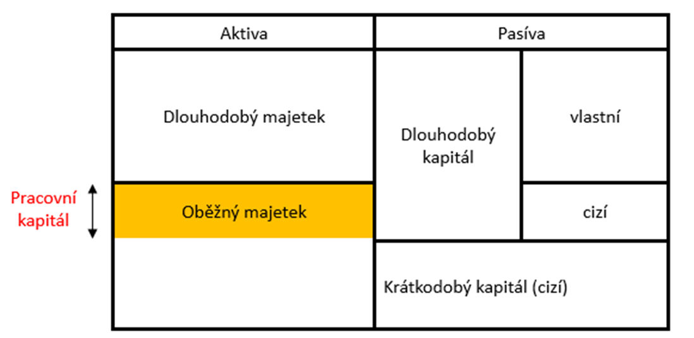

5 Podnikové finance a zdroje finančních informací
- Dahlquist, J. R., &; Knight, R. (2022). Principles of finance. OpenStax, Rice University. https://openstax.org/details/books/principles-finance
- Chapter 2 - Corporate Structure and Governance
- Chapter 5 - Financial Statements
- RůČKOVÁ, P. (2011). Finanční analýza–4. rozšířené vydání. Grada Publishing as.
Výstupy z učení:
- Definovat podnikové finance a hlavní cíl finančního managementu.
- Znát typy obchodních společností.
- Porozumět struktuře výkazu zisků a ztráty, rozvahy a výkazu cash flow.
- Definovat majetkovou a finanční strukturu rozvahy.
- Znát jednotlivé typy zisků.
- Znát různé druhy cash flow.
5.1 Podnikové finance
Podnikové finance se zabývají získáváním finančního kapitálu, řízením finančních operací a aktiv podniku od jeho založení až po případný zánik. Zobrazují pohyby peněžních prostředků, kapitálu a dalších finančních zdrojů.
5.1.1 Struktura a řízení firmy
Firmy sledují finanční i nefinanční cíle, jako je rozšiřování prodeje, spokojenost zákazníků a vývoj nových produktů. Maximalizace bohatství vlastníků nebo akcionářů se zaměřuje na dlouhodobou prosperitu firmy.
Hlavní cíl finančního managementu
Hlavním cílem finančního managementu je maximalizace tržní hodnoty firmy, tedy například tržní ceny akcií u akciových společností. Efektivní podnik musí poskytovat kvalitní produkty a služby při co nejnižších nákladech, což vede k dlouhodobé prosperitě a růstu hodnoty podniku. Klíčová je také péče o zaměstnance a dobrá pověst, přičemž tento cíl by měl být dosažen v souladu se zákonem a etickými zásadami.
5.1.2 Typy obchodních společností
Typy obchodních společností jsou specifikovány v zákoně č. 90/2012 Sb., Zákon o obchodních společnostech a družstvech. Výběr správné struktury závisí na možnostech financování, zdanění a likviditě.
Akciová společnost
Akciová společnost je právnická osoba, jejíž majetek je rozdělen na akcie. Za své závazky odpovídá celým svým majetkem, ale akcionáři za závazky společnosti neručí a nehradí její případné ztráty. Oddělení vlastníků od managementu umožňuje společnosti dlouhodobé fungování, i když se vlastníci nebo manažeři mění.
Další typy obchodních společností
- Veřejná obchodní společnost – Společnost alespoň dvou osob, které se podílejí na podnikání a ručí za její dluhy celým svým majetkem.
- Komanditní společnost – V této společnosti alespoň jeden společník ručí za dluhy omezeně (komanditista) a jeden neomezeně (komplementář).
- Společnost s ručením omezeným (s.r.o.) – Ručí za závazky celým svým majetkem, přičemž společníci ručí do výše nesplněných vkladových povinností.
5.1.3 Vztah mezi akcionáři a vedením společnosti
- Stakeholder je každá osoba nebo subjekt, který má zájem na výsledcích společnosti (zaměstnanci, zákazníci, dodavatelé, stát).
- Akcionáři jsou jednotlivci nebo organizace, které vlastní akcie společnosti. Jsou vlastníky firmy, zatímco stakeholder může být zainteresovaný i nefinančně.
- Akcionáři mají nárok na dividendy, hlasují o záležitostech společnosti a mohou být zvoleni do představenstva.
- Existují dva typy akcionářů:
- Kmenoví akcionáři – mají hlasovací práva a vlastní kmenové akcie.
- Prioritní akcionáři – vlastní prioritní akcie s pevným výnosem, ale bez hlasovacího práva.
- Akcionáři najímají manažery k řízení firmy. Představenstvo (board of directors, BOD) dohlíží na korporaci, zatímco manažeři střední úrovně spravují každodenní provoz.
5.1.4 Problém zastoupení
Problém zastoupení vzniká, když je od jedné osoby či skupiny očekáváno, že bude jednat v zájmu jiné osoby, avšak může dojít ke konfliktu zájmů.
Ve financích je nejčastěji spojován s konfliktem mezi akcionáři a managementem, nebo mezi akcionáři a dalšími zainteresovanými stranami, jako jsou zaměstnanci.
Pokud manažeři využívají své pozice pro osobní prospěch místo maximalizace hodnoty pro akcionáře, nastává problém. Asymetrie informací mezi stranami tento problém prohlubuje. V současnosti je stále častěji využíváno hodnocení ESG (životní prostředí, sociální oblast a správa a řízení), které naznačuje proaktivní řízení a dlouhodobou hodnotu podniku.
Náklady problému zastoupení
Pokud management upřednostňuje své zájmy před zájmy akcionářů, vznikají ve firmě neefektivnosti. Tento problém nelze zcela odstranit, ale může být zmírněn, přičemž snahy o jeho řešení obvykle vyžadují dodatečné náklady.
Možná řešení
Možná řešení problému zastoupení zahrnují právní prevence, kontrolu a dohled nad činností managementu, motivační odměňování vázané na výkonnost (např. hodnotu akcií), nebo možnost odvolat vedení. Klíčové je také správné nastavení corporate governance.
5.1.5 Společnosti na domácích a globálních trzích
- Společnosti na českém trhu vedou účetnictví dle českých účetních standardů, pokud není zákonem stanoveno jinak.
- Firmy působící v USA dodržují americké účetní a cenné papírové předpisy, konkrétně používají zásady GAAP (Generally Accepted Accounting Principles).
- V Evropě, Asii a některých částech Jižní Ameriky se naopak používají standardy IFRS (International Financial Reporting Standards).
Ačkoli GAAP a IFRS sledují stejný cíl objektivního finančního výkaznictví, v praxi se liší, zejména v oblastech jako účtování zásob, konsolidace dceřiných společností a vykazování menšinových podílů. Při analýze společnosti je důležité zohlednit, zda firma používá české účetní standardy, GAAP nebo IFRS.
5.1.6 Role financí ve firmě
Finanční plánování zajišťuje přehled o minulých, současných i budoucích finančních potřebách organizace a pomáhá dosahovat obchodních cílů. Kvalitní finanční plánování zahrnuje výkazy zisků a ztrát, peněžních toků, rozvahy, prognózy a různé nástroje finanční analýzy, například poměrové ukazatele.
Rozpočtování je klíčovou součástí finančního plánování, které se zaměřuje na objem, zdroje a využití peněžních prostředků. Finanční plánování pomáhá řídit rozpočtové změny, identifikovat odchylky od očekávaných výsledků a slouží jako základ pro tvorbu budoucích rozpočtů.
5.2 Zdroje finančních informací
Finanční informace o výkonnosti a stavu podniku jsou poskytovány třemi hlavními výkazy:
- Výkaz zisku a ztráty (income statement)
- Rozvaha (balance sheet)
- Výkaz cash flow (cash flow statement)
5.2.1 Výkaz zisků a ztráty
Výkaz zisků a ztrát zachycuje výkonnost firmy za určité období a zobrazuje tržby a náklady spojené s jejich realizací. Tento dokument vykazuje všechny výnosy (tržby) a náklady za účetní období, bez ohledu na to, zda došlo k jejich skutečnému inkasu nebo zaplacení.
- Výnosy představují peněžní částky, které podnik získal z veškerých svých činností za dané období.
- Náklady jsou peněžní částky, které podnik účelně vynaložil na dosažení výnosů, i když jejich zaplacení nemuselo nastat ve stejném období.
Vybrané položky výkazu zisků a ztráty
Některé důležité položky výkazu zisků a ztrát zahrnují:
- Tržby za prodej výrobků a služeb – zahrnují tržby za výrobky a služby vyprodukované samotnou firmou.
- Tržby za prodej zboží – příjmy z přeprodeje zboží, které firma nevyrobila.
- Výkonová spotřeba – náklady na materiál, energie, opravy, cestovné a drobný nehmotný majetek.
- Změna stavu zásob – rozdíl v hodnotě nedokončené výroby, polotovarů a výrobků, který může být kladný i záporný.
- Odpisy – snížení účetní hodnoty dlouhodobých aktiv v důsledku jejich používání.
- Opravné položky – dočasné snížení hodnoty aktiv, např. pohledávek či zásob, pokud existují pochybnosti o jejich plné hodnotě.
Pokud odběratel dluží firmě 100 000 Kč po dobu dvou let a pravděpodobnost splacení je nízká, opravná položka sníží hodnotu této pohledávky, aby účetnictví odráželo věrnou realitu.
Výsledky hospodaření
Výsledky hospodaření firmy jsou členěny na několik kategorií:
- Provozní výsledek hospodaření: rozdíl mezi provozními výnosy a náklady.
- Finanční výsledek hospodaření: rozdíl mezi finančními výnosy a náklady.
- Výsledek hospodaření před zdaněním: součet provozního a finančního výsledku.
- Čistý zisk: výsledek hospodaření po odečtení daně.
Klíčové ukazatele
Pro hodnocení výkonnosti firmy jsou důležité následující ukazatele:
- EBITDA (Earnings before Interest, Taxes, Depreciation, and Amortization): provozní výsledek hospodaření po přičtení odpisů hmotného a nehmotného majetku.
- EBIT (Earnings before Interest and Taxes): měří efektivitu podnikání bez zohlednění financování a zdanění.
- EBT (Earnings before Taxes): výsledek hospodaření před zdaněním.
- EAT (Earnings after Taxes): čistý zisk po zdanění.
5.2.2 Rozvaha
Rozvaha zachycuje stav dlouhodobého hmotného a nehmotného majetku (aktiva) a zdrojů jejich financování (pasiva) k určitému datu. Poskytuje základní přehled o majetku podniku a jeho financování v určitém okamžiku, a to ve statické formě, tedy k okamžiku účetní závěrky.
Aktiva (majetek)
Aktiva představují veškerý majetek, který firma vlastní, a jsou rozdělena do dvou hlavních kategorií:
- Dlouhodobý majetek zahrnuje dlouhodobá hmotná, nehmotná a finanční aktiva, která jsou ve firmě používána po delší dobu.
- Oběžná aktiva představují krátkodobý majetek, jako jsou zásoby, pohledávky a hotovost, které se rychleji mění v rámci běžného provozu.
Pasiva (zdroje financování)
Pasiva zahrnují zdroje financování aktiv podniku a dělí se na:
- Vlastní kapitál: kapitál vložený vlastníky společnosti, například základní kapitál, rezervy nebo nerozdělený zisk.
- Cizí zdroje: zahrnují závazky vůči věřitelům, jako jsou úvěry, dluhopisy a neuhrazené závazky.
Rovnice rozvahy
Základní rovnice rozvahy, která musí být vždy v rovnováze, zní:
\[ \text{Majetek} = \text{Zdroje financování} \]
\[ \text{Aktiva} = \text{Vlastní kapitál} + \text{Cizí zdroje} \]
Rozvaha ve zkráceném rozsahu
Rozvaha může být prezentována ve zjednodušené formě, která shrnuje hlavní kategorie aktiv a pasiv, což poskytuje rychlý přehled o finanční situaci podniku bez přílišného detailu.
5.2.3 Majetková struktura podniku
Majetková struktura podniku představuje přehled aktiv, tedy majetku, který přináší budoucí ekonomický užitek. Aktiva lze rozdělit na dlouhodobá a krátkodobá (oběžná) podle doby jejich využití.
Dlouhodobý majetek
Dlouhodobý majetek zahrnuje:
- Nehmotný majetek, jako je know-how, goodwill, software, výsledky výzkumu, licence a patenty.
- Hmotný majetek, například pozemky, budovy, strojní zařízení, technické vybavení a inventář.
- Finanční majetek, což jsou cenné papíry a účasti se splatností delší než jeden rok, nebo poskytnuté půjčky se splatností nad jeden rok.
Oběžná (krátkodobá) aktiva
Krátkodobá aktiva zahrnují:
- Zásoby: materiál, zboží, polotovary a pomocné látky.
- Krátkodobé pohledávky: pohledávky se splatností do jednoho roku.
- Krátkodobý finanční majetek: finanční aktiva se splatností do jednoho roku.
- Peněžní prostředky: hotovost a prostředky na běžných účtech.
Faktory ovlivňující majetkovou strukturu podniku
Majetková struktura podniku závisí na několika faktorech:
- Obor podnikání – různé sektory, jako bankovnictví, obchod nebo výroba, vykazují odlišnou majetkovou strukturu.
- Technická náročnost výroby – firmy s vyšší technickou náročností obvykle vlastní větší podíl hmotného a nehmotného dlouhodobého majetku, jako je know-how nebo patenty.
- Rozvinutost peněžního a kapitálového trhu – přístup k finančním trhům ovlivňuje podíl finančních aktiv.
- Ekonomická situace a strategie podniku – rozhodnutí o alokaci zdrojů a majetkové struktuře jsou formovány firemní strategií a aktuálními ekonomickými podmínkami.
V průmyslu a službách je vysoký podíl dlouhodobého majetku, zatímco ve stavebnictví převládají pohledávky kvůli dlouhým dobám splatnosti.
5.2.4 Finanční struktura podniku
Finanční struktura podniku představuje způsob, jakým je financován majetek podniku, a je zobrazena na straně pasiv v rozvaze. Skládá se z vlastního kapitálu a cizích zdrojů.
Vlastní kapitál
Vlastní kapitál tvoří:
- Základní kapitál – kapitál vložený do podniku akcionáři nebo společníky, včetně peněžních a nepeněžitých vkladů.
- Kapitálové fondy – vytvářeny z darů, dotací, neodepisovaného majetku a emisního ážia.
- Fondy ze zisku – zahrnují rezervní fondy, statutární fondy a další fondy tvořené ze zisku.
- Výsledek hospodaření – vyjadřuje zisk nebo ztrátu podniku za určité období.
- Nerozdělený zisk – příjmy společnosti získané od jejího vzniku, snížené o dividendy vyplacené akcionářům.
Cizí zdroje
Cizí zdroje zahrnují:
- Rezervy – vytvářené pro specifické účely, jako jsou rezervy na opravy majetku nebo nedobytné pohledávky.
- Dlouhodobé závazky – dluhopisy, závazky se splatností delší než jeden rok a bankovní úvěry.
- Krátkodobé závazky – obchodní úvěry, závazky vůči státu, zaměstnancům či společníkům, a bankovní úvěry se splatností do jednoho roku.
Optimalizace finanční struktury
- Optimalizace finanční struktury zahrnuje vyváženou kombinaci vlastního a cizího kapitálu, která minimalizuje náklady na kapitál a zároveň kontroluje rizika.
- Optimální finanční struktura je taková, při níž jsou průměrné náklady na kapitál minimální a tržní hodnota firmy maximální.
- Je důležité dosáhnout správné rovnováhy mezi likviditou, rizikem a náklady na kapitál.
5.2.5 Bilanční pravidla
- Zlaté pravidlo financování – krátkodobé zdroje by měly financovat oběžná aktiva, zatímco dlouhodobé zdroje by měly pokrývat dlouhodobý majetek.
- Zlaté pravidlo vyrovnání rizika – vlastní kapitál by měl převyšovat nebo se rovnat cizím zdrojům, aby se omezila rizika a udržely nízké náklady na kapitál.
- Zlaté pari pravidlo – dlouhodobý majetek by měl být financován primárně vlastním kapitálem.
- Zlaté poměrové pravidlo – růst investic by neměl překračovat růst tržeb, aby nedošlo ke snížení rentability a likvidity podniku.
5.3 Strategie financování
Finanční strategie firmy vyjadřuje, jakým způsobem jsou financovány aktiva podniku, zejména rozdělení mezi krátkodobé a dlouhodobé zdroje. Existují tři základní přístupy k financování.
5.3.1 Neutrální strategie
Neutrální strategie spočívá v tom, že dlouhodobý majetek a trvale přítomná oběžná aktiva jsou financována dlouhodobým kapitálem (vlastním i cizím), zatímco proměnlivá část oběžných aktiv je kryta krátkodobým kapitálem.
5.3.2 Konzervativní strategie
Konzervativní strategie využívá vyšší podíl dlouhodobých finančních zdrojů, kterými se financuje i část oběžných aktiv. Tento přístup snižuje riziko platební neschopnosti, protože podnik má k dispozici stabilní dlouhodobé zdroje. Nicméně s tímto modelem přichází vyšší náklady, jelikož dlouhodobý kapitál je obvykle dražší než krátkodobý.
5.3.3 Agresivní strategie
Agresivní strategie naopak spočívá v tom, že podnik financuje i část trvale přítomných oběžných aktiv a někdy i dlouhodobý majetek pomocí krátkodobých zdrojů. Tento přístup snižuje náklady na financování, ale zvyšuje riziko platební neschopnosti, protože krátkodobé závazky mohou být splatné dříve, než podnik získá dostatek prostředků na jejich pokrytí.
5.3.4 Doporučení a shrnutí
Při volbě strategie financování by se měly zohlednit následující zásady:
- Udržovat optimální poměr mezi vlastním a cizím kapitálem, při němž jsou celkové náklady na kapitál minimální a tržní hodnota firmy maximální.
- Krátkodobá aktiva by měla být financována krátkodobým kapitálem.
- Dlouhodobá aktiva je vhodné financovat dlouhodobým kapitálem, a to jak vlastním, tak cizím.
- Dlouhodobá aktiva, která jsou klíčová pro hlavní činnost podniku, je lepší financovat převážně vlastním kapitálem. Ostatní dlouhodobá aktiva lze financovat cizími zdroji, protože je v případě potřeby možné je odprodat.
- Vysoký podíl dlouhodobého kapitálu snižuje efektivnost, protože dlouhodobé zdroje jsou dražší.
- Nízký podíl dlouhodobého kapitálu (a tedy vyšší podíl krátkodobých zdrojů) je riskantní a může vést k finančním problémům.
- Oběžná aktiva by měla výrazně převyšovat krátkodobý cizí kapitál, aby byl podnik schopen plynule fungovat i v případě finančních problémů.
5.4 Čistý pracovní kapitál (Net Working Capital)
Čistý pracovní kapitál (ČPK) představuje rozdíl mezi oběžnými aktivy a krátkodobými cizími zdroji, a hraje klíčovou roli v udržování platební schopnosti podniku. Výpočet ČPK vychází z rozlišení mezi oběžným a dlouhodobým majetkem a také mezi dlouhodobě a *krátkodobě vázaným kapitálem.
- ČPK = Oběžná aktiva – Krátkodobé cizí zdroje
- ČPK = Vlastní kapitál + Dlouhodobé cizí zdroje – Dlouhodobý majetek
ČPK je pozitivní, pokud oběžná aktiva převyšují krátkodobé závazky, což signalizuje, že podnik má dostatek prostředků pro pokrytí svých krátkodobých závazků. Naopak záporný ČPK může znamenat potenciální problémy s likviditou.

5.4.1 Solventnost
- Solventnost označuje schopnost podniku splácet své závazky v řádných lhůtách.
- Solventní podnik má dostatek finančních zdrojů k úhradě svých závazků, zatímco nesolventní podnik (se záporným vlastním kapitálem) dluží více, než je schopen splatit.
5.5 Výkaz cash flow – přehled o peněžních tocích
Výkaz cash flow je zásadní finanční dokument, který poskytuje přehled o zdrojích a použití peněžních prostředků podniku během účetního období. Zatímco rozvaha a výkaz zisků a ztrát zaznamenávají transakce v okamžiku jejich uskutečnění, výkaz cash flow se zaměřuje výhradně na skutečné pohyby peněžních prostředků.
Na rozdíl od výkazu zisků a ztrát, který neposkytuje kompletní obraz o pohybu peněz ve firmě, výkaz cash flow odhaluje, jak peníze skutečně proudí. Tento výkaz je tedy nezbytný pro pochopení celkové likvidity a finanční stability podniku.
5.5.1 Struktura výkazu cash flow
Peněžní toky jsou rozděleny do tří hlavních kategorií:
- Provozní činnost: zahrnuje příjmy a výdaje spojené s každodenním obchodním provozem.
- Investiční činnost: týká se nákupu a prodeje dlouhodobého majetku a investic.
- Finanční činnost: zahrnuje změny ve vlastním kapitálu a dlouhodobých závazcích, jako jsou úvěry a emise akcií.
Existují dva hlavní způsoby, jak vypočítat cash flow:
- Přímá metoda: zobrazuje příjmy a výdaje z provozní činnosti přímo, přičemž sleduje skutečné platby.
- Nepřímá metoda: vychází z výsledku hospodaření a upravuje jej o nepeněžní operace, jako jsou odpisy, a změny pracovního kapitálu. Tato metoda je běžněji používaná.
Cash flow z provozní činnosti
Tato část ukazuje rozdíl mezi provozními příjmy a výdaji za určité období, což vypovídá o schopnosti firmy generovat peněžní prostředky ze svých hlavních obchodních aktivit.
Cash flow z investiční činnosti
Zahrnuje příjmy a výdaje spojené s nákupem a prodejem dlouhodobého majetku, jako jsou nemovitosti, stroje nebo investice do jiných firem.
Cash flow z finanční činnosti
Peněžní toky z finanční činnosti se vztahují k financování podniku, jako jsou změny ve vlastním kapitálu nebo dlouhodobých závazcích. Tato část výkazu ukazuje, jak podnik získává nebo splácí finanční prostředky.
Volné cash flow
Volné cash flow představuje rozdíl mezi provozním cash flow a kapitálovými výdaji, které jsou upraveny o změny v dlouhodobém majetku. Je to ukazatel toho, kolik peněz má firma k dispozici po financování svých základních provozních potřeb.
- Pokud je volné cash flow záporné, firma musí získat dodatečné finanční prostředky prostřednictvím zvýšení vlastního kapitálu nebo cizích zdrojů.
5.5.2 Shrnutí
Výkaz cash flow sleduje změny stavu peněžních prostředků a poskytuje důvody, proč k těmto změnám dochází. Pomáhá posoudit kvalitu dosažených zisků a zjistit, zda jsou peněžní prostředky generovány převážně z provozních činností nebo z neprovozních aktivit. Výkaz cash flow je sestavován buď přímou, nebo častěji nepřímou metodou, a rozděluje peněžní toky do tří hlavních kategorií: provozní, investiční a finanční činnosti.